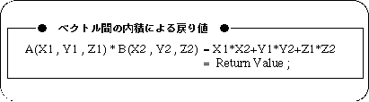
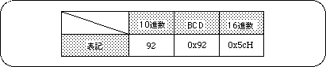

Return to previous page | Return to menu | Go to next page
11-3. Special arithmetic functions
Figure 11-3 Vector inner product return value

- [Uint32 slDec2Hex (Uint32 val);]
- Converts the numeric value represented by the BCD code into a hexadecimal code.
- [Uint32 slHex2Dec (Uint32 val);]
- Converts the numeric value expressed in hexadecimal code to BCD code.
- [Uint16 slAng2Hex (ANGLE ang);]
- Converts the angle value represented by the ANGLE code into a hexadecimal code.
The converted value is returned in the range 0x000 to 0x167.
- [Uint16 slAng2Dec (ANGLE ang);]
- Converts the angle value represented by ANGLE code into BCD code.
The converted value is returned in the range 0x000 to 0x359.
- [FIXED slAng2FX (ANGLE ang);]
- The angle value represented by the ANGLE code is converted to a FIXED code.
The converted value is returned in the range of 0.0 to 359.99.
Table 11-1 Examples of numerical notation using each numerical notation

Return to previous page | Return to menu | Go to next page